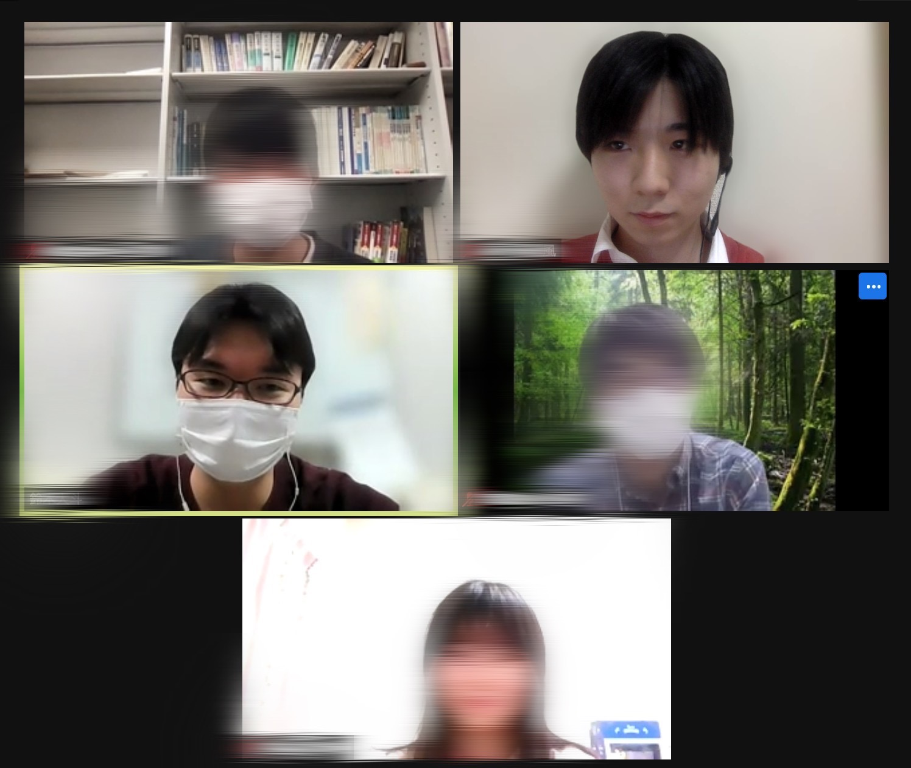
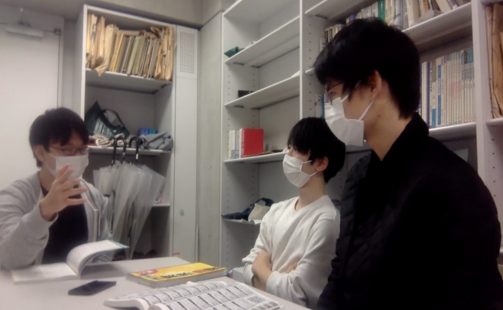

コロナ禍だからこそ密度の濃い話し合い

法学部２年 森
コロナ禍で対面での活動をすることが困難であった中、部員の協力もありオンラインという形で活動を継続できた。普段は対面なのでしばしばヒートアップしすぎて議論が平行線になることもあったが、オンラインでの議論ではより互いによく話を聞くようになった。今後も対面オンラインハイブリッド型による密の濃い熟議を重ねたい。
対話を通して学べたものがある
法学部１年 鈴木
今まで自分なりに考えたことを授業で発表することを自信がなくて思いとどまってしまっていた。相手が聞いてくれるか不安だったからだ。だけど、公法会はなんでも率直な意見を気軽に言い合える空間だった。おかげで自信が持てて最近では授業でも自分の主張を言えるようになった気がする。
